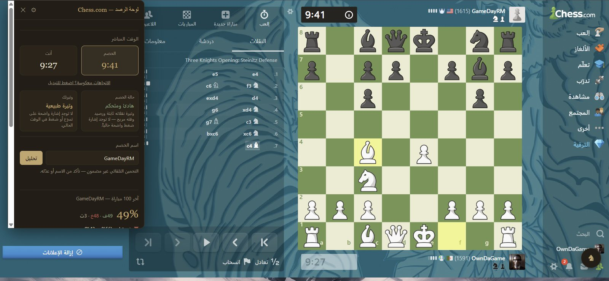
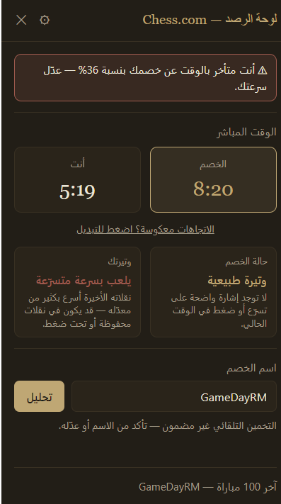
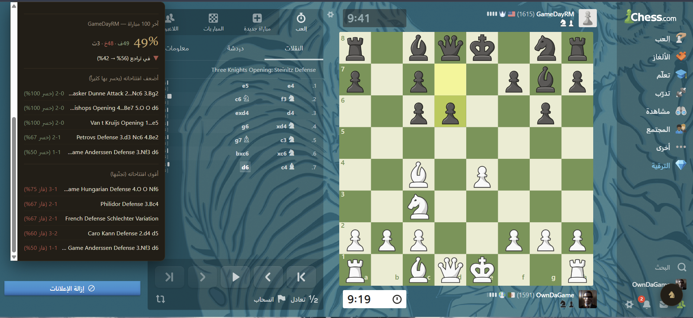
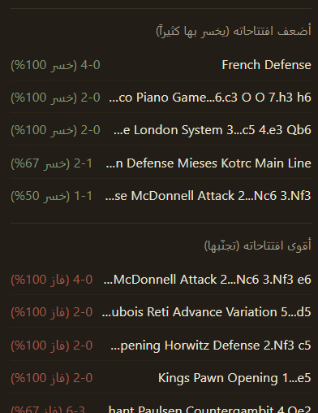
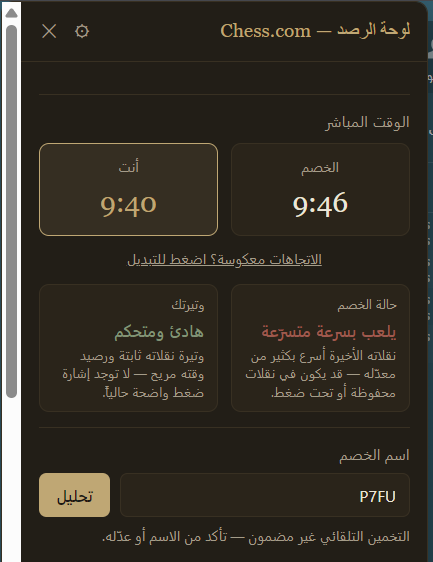

تظهر لوحة رصد تلقائياً فوق أي مباراة على Lichess أو Chess.com: إحصائيات آخر 100 مباراة لخصمك، ساعته المباشرة، وإنذار فوري إذا بدأ الوقت يداهمك.

الأرقام أعلاه عن آلية عمل الإضافة نفسها — أما لقطات الشاشة في هذه الصفحة فمن مباريات حقيقية استُخدمت فيها اللوحة.
لا إعدادات، لا نقر إضافي. اللوحة تنتظر بداية المباراة وتتحرك بنفسها.
بمجرد اكتشاف بداية مباراة جديدة، تُبنى لوحة الرصد فوق الصفحة وتُرسَل طلبات إلى API الخاص بالمنصة لجلب آخر 100 مباراة لاسم الخصم المكتشَف أو المُدخَل يدوياً.
محرك clock-tracker.js يبحث عن عنصرين يتصرفان فعلاً كعدّاد تنازلي حقيقي، بدل الاعتماد على أصناف CSS ثابتة قد تتغيّر مع كل تحديث للموقع.
إذا تجاوز الفارق بين وقتك ووقت الخصم الحدّ المضبوط، يظهر تنبيه مرئي داخل اللوحة مع إشعار من المتصفح — حتى لو لم تكن اللوحة مفتوحة أمامك.
أربع قدرات تعمل معاً بلا أي تدخّل منك.

في هذه المباراة الفعلية، تأخر اللاعب عن خصمه بنسبة 36% (5:19 مقابل 8:20)، فأطلقت اللوحة الإنذار فوراً وأظهرت أن وتيرة اللعب أصبحت "متسارعة" — إشارة على أن الوقت بدأ يضغط فعلاً.
نسبة الفوز والخسارة والتعادل لآخر 100 مباراة، مع اتجاه الأداء العام (تحسّن أو تراجع) محسوباً تلقائياً.
افتتاحات يخسر بها الخصم باستمرار، وأخرى يفوز بها غالباً — مرتبة حسب عدد المرات ونسبة النتيجة.
بلا selectors ثابتة. الإضافة تكتشف عنصر الساعة من سلوكه الفعلي كعدّاد تنازلي، فتبقى صامدة أمام تحديثات تصميم المواقع.
لا بيانات تُرسل لأي خادم غير lichess.org وapi.chess.com، مباشرة من متصفحك. لا تتبّع، لا تحليلات خارجية.
مبنية على قواعد واضحة — مقارنة سرعة النقلة الأخيرة بمعدّل اللاعب، ونسبة الوقت المتبقي — لا على ذكاء اصطناعي يحلل الأفكار. اعتبرها مؤشراً مساعداً، لا حقيقة مؤكدة.
لا تصاميم توضيحية هنا — هذه لقطات من استخدام فعلي للإضافة.



مواقع الشطرنج لا توفر أي وسيلة رسمية لقراءة وقت المباراة لحظياً. الاعتماد على أسماء أصناف CSS ثابتة حل هشّ — يتعطل مع أول تحديث لتصميم الموقع.
بدل ذلك، يراقب clock-tracker.js جميع العناصر المرشّحة، ويرصد أيها تتناقص قيمته فعلياً بمرور الوقت — أي أيها "يتصرف" كساعة حقيقية — قبل اعتماده. إذا فشل الاكتشاف، تبقى بقية اللوحة تعمل بلا مشاكل.
اكتشاف تلقائي كل ثانية، بلا الاعتماد على بنية HTML ثابتة
وضع المطوّر في Chrome — بلا متجر، بلا انتظار.
حمّل مجلد المشروع من GitHub وفكّ ضغطه إن كان مضغوطاً.
في Chrome، انتقل إلى chrome://extensions.
المفتاح موجود في الزاوية العلوية اليمنى من الصفحة.
اختر Load unpacked ثم حدّد مجلد chess-opponent-scout.
من نافذة الإضافة، سجّل اسمك على Lichess أو Chess.com ليساعد التخمين التلقائي على تمييزك عن خصمك.